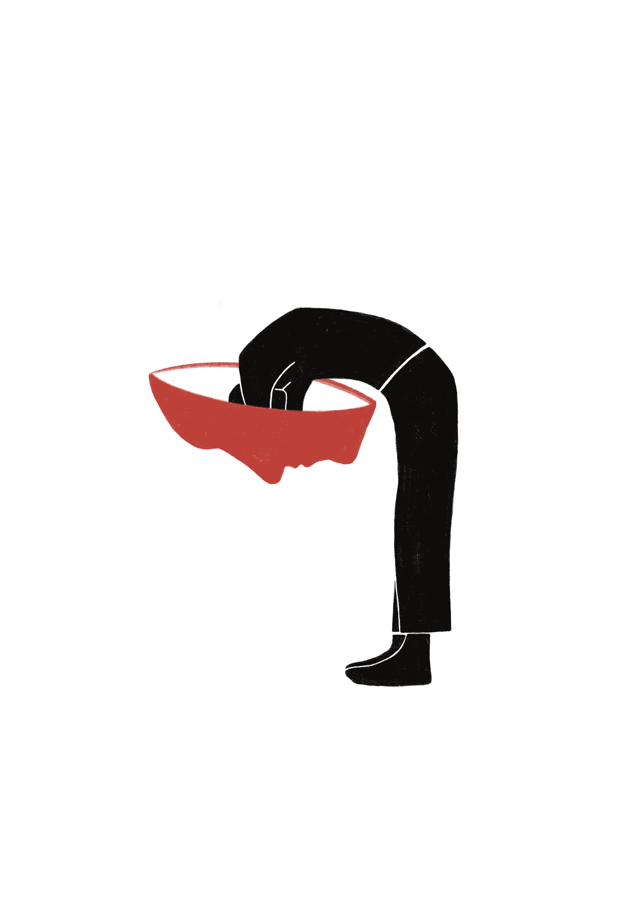

kijk binnenin
kijk binnenin
Wat begon als doel voor mijn minor om Procreate te leren, is uitgegroeid tot 'binnenin': een werk waarin jongvolwassenen die veel te kampen hebben met angst centraal staan. Ik heb bewust gekozen voor dit thema, omdat ik hier zelf veel mee te maken heb (gehad). Door gesprekken met vrienden ontdekte ik dat dit een onderwerp is dat sterk leeft.
Iedereen heeft angsten; dat is menselijk. Maar het kan zwaar wegen om in een levensfase waarin van je wordt verwacht dat je alles uitzoekt, tegelijkertijd met deze angsten te worstelen. Dit verwachtingspatroon maakt het vaak moeilijker om gevoelens bespreekbaar te maken. De uitdaging was om deze gesprekken te vertalen naar een middel voor (h)erkenning. Ik wil je graag meenemen in hun verhalen: neem maar een kijkje binnenin.